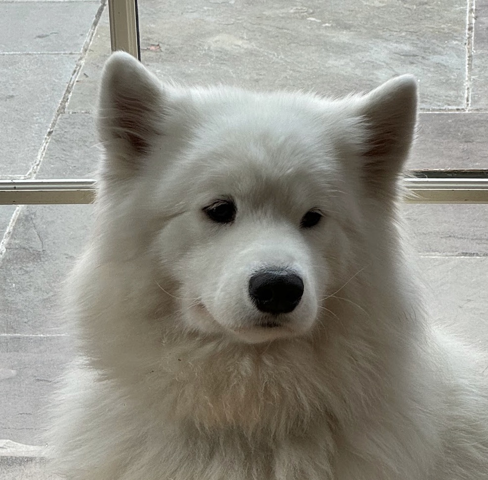

work
life
Languages
Confident (~B2): Spanish, French, Russian, German
Conversant (~A2-B1): Portuguese, Chinese, Turkish, Italian
Quasi-Conversant (High A1): Serbian, Dutch, Arabic, Norwegian, Korean, Uzbek, Cantonese
Flailing (Low A1): Luganda, Swahili, Farsi, Catalan, Kurdish (Kurmanji), Urdu, Thai, Japanese, Malay, Albanian, Hungarian
Inconceivably Abysmal: English
Conversant (~A2-B1): Portuguese, Chinese, Turkish, Italian
Quasi-Conversant (High A1): Serbian, Dutch, Arabic, Norwegian, Korean, Uzbek, Cantonese
Flailing (Low A1): Luganda, Swahili, Farsi, Catalan, Kurdish (Kurmanji), Urdu, Thai, Japanese, Malay, Albanian, Hungarian
Inconceivably Abysmal: English
Travel Photos and Stories
Miscellaneous
- I got 3rd place in a Connecticut team ornithology competition.
- I learned how to ride a bike at age 19.
- I have a 1:44 half marathon time.
- I have bought 3 Chemexes and 4 Aeropresses in my life.
- Both my grandmother and I have been robbed once, both in Ulaanbaatar, Mongolia.
- I was possibly going to be a major role in a Connecticut community theater version of As You Like It. This sadly didn’t happen due to university.
- I did terribly in high school drawing class. Like terribly-terribly. My final project was me making a sine graph out of sticks. It took 5 minutes, and I got what I deserved.
- Apparently when I was a toddler, baby-Alex was in Italian Vogue. At that point, the bar for male model is “have hair.” If you represent Vogue, my inbox is open.
- I have a dog, she is objectively very cute. 
Writing
I sometimes write short stories and essays —
click here to see a small portfolio
.